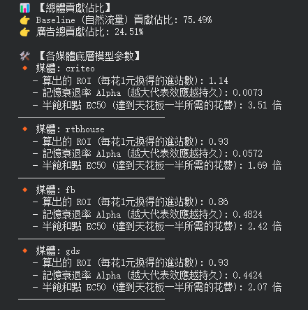

* FB貢獻session數多，但花費也多。
* criteo和Google的花費岔不多，但Google的session貢獻比較少。。
* 據google mmm模型的建議，只有Criteo媒體會加碼。。
文字報告

* 各媒體都還沒達到飽和，若要加碼可以再加碼。
* Criteo和RTBHouse都屬於短效廣告，影響不持久，Facebook 和 Google數比較長效的廣告，通常可以維持2~3週。